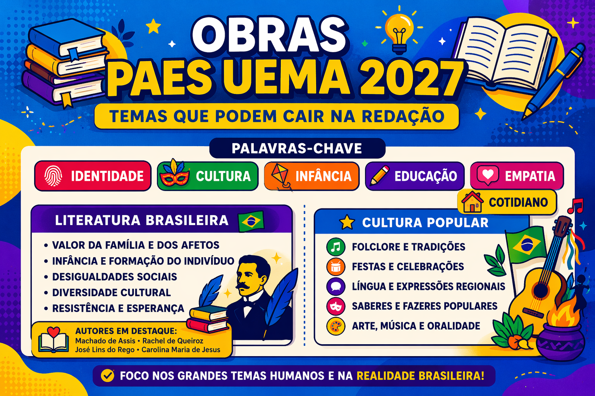

Análise Preliminar das Obras do PAES UEMA 2027: Temas que Podem Cair na Redação
As obras literárias exigidas no PAES UEMA 2027 são fundamentais não apenas para a prova de literatura, mas também para a construção de repertório sociocultural na redação. Neste guia, você encontra uma análise estratégica das principais temáticas de cada obra, com foco no que pode ser cobrado como tema de redação.

Crônicas de Lucy Teixeira – Ceres Costa Fernandes
Contexto da obra
Obra contemporânea que reúne crônicas voltadas para o cotidiano, explorando vivências, reflexões pessoais e questões sociais. O gênero crônica aproxima o leitor da realidade, promovendo identificação e senso crítico.
Principais temáticas
- Cotidiano e vida urbana
- Reflexões sobre comportamento social
- Relações humanas
- Empatia e sensibilidade social
- Crítica a hábitos e costumes
Possíveis temas de redação
- Os desafios das relações humanas na sociedade contemporânea
- A importância da empatia no convívio social
- O impacto do cotidiano na formação do indivíduo
- Comportamentos sociais e suas consequências
Infância – Graciliano Ramos
Contexto da obra
Clássico da segunda geração do modernismo brasileiro, a obra apresenta memórias da infância do autor, marcada por um ambiente rígido, dificuldades e experiências formadoras. A narrativa revela aspectos sociais e psicológicos do Brasil da época.
Principais temáticas
- Infância e formação do indivíduo
- Educação e autoritarismo
- Desigualdade social
- Memória e identidade
- Dureza da realidade social
Possíveis temas de redação
- Os impactos da infância na construção da identidade
- Os desafios da educação no Brasil
- Autoritarismo e suas consequências na formação humana
- A influência do contexto social no desenvolvimento individual
Meu Livro de Cordel – Cora Coralina
Contexto da obra
Coletânea de poesias que valoriza a cultura popular, o cotidiano e as experiências de vida simples. A obra destaca a força da oralidade e a importância das tradições culturais brasileiras.
Principais temáticas
- Cultura popular e tradição
- Valorização das experiências simples
- Identidade cultural
- Memória e vivência
- Sabedoria popular
Possíveis temas de redação
- A valorização da cultura popular no Brasil
- A importância da memória na construção da identidade
- Os saberes populares e sua relevância social
- A invisibilidade das culturas tradicionais
Temas Transversais Mais Prováveis na Redação do PAES UEMA 2027
- Construção da identidade individual
- Desigualdade social
- Educação e formação humana
- Cultura popular e valorização social
- Relações humanas e empatia
- Influência do meio social no indivíduo
Dica Estratégica para a Redação
Utilizar essas obras como repertório sociocultural pode garantir um diferencial na sua redação. Ao citar ideias centrais dessas obras, você demonstra capacidade crítica e domínio de conteúdo — competências valorizadas na correção.
Dica prática: priorize compreender os temas e relacioná-los com a realidade atual, em vez de apenas decorar informações.
Conclusão
A leitura e análise dessas obras vão além da prova de literatura: elas ajudam a interpretar a sociedade e a construir argumentos sólidos. Estudar Crônicas de Lucy Teixeira, Infância e Meu Livro de Cordel é um passo essencial para conquistar uma boa nota na redação do PAES UEMA 2027.
Explore Outros Conteúdos
Continue seus estudos acessando outras seções do site Mestre Kira: